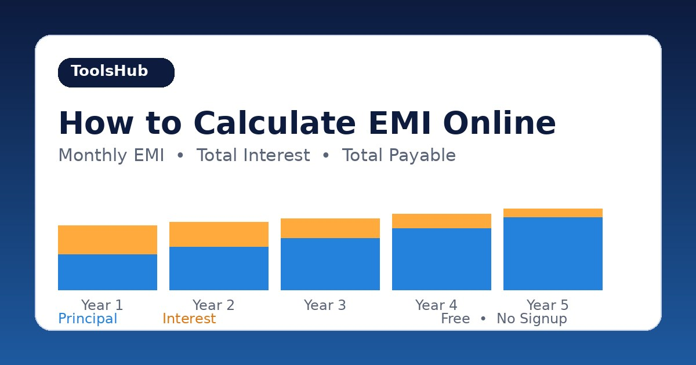

How to Calculate EMI Online
Know your exact monthly payment before you sign anything — EMI, total interest and total payable in seconds.
October 15, 2026 · 6 min read

Before you take a loan, there is one number that matters more than any other: the monthly EMI. That is the fixed amount you will pay every month until the loan is finished. If the EMI fits your budget comfortably, the loan is manageable. If it does not, no amount of reassurance from the lender changes the maths.
Lenders usually quote the loan amount, the interest rate, and the tenure — not the EMI itself. Working out the monthly payment by hand means an awkward formula with exponents, and a small slip changes the answer. This guide shows you how to calculate EMI online in seconds, what the number includes, and how to compare loan options honestly before you commit.
What EMI actually means
EMI stands for Equated Monthly Instalment: a fixed monthly payment covering part of the principal (the amount you borrowed) plus interest on the outstanding balance. You pay the same total every month, but the split changes: early payments are mostly interest, because the balance is still large; later payments are mostly principal. By the final payment, the balance reaches zero.
Almost all consumer loans use the reducing-balance method: interest is charged only on the amount you still owe, not on the original loan. That is why early repayment saves real money — every extra payment cuts the balance, and future interest is calculated on the smaller balance.
The standard EMI formula is:
EMI = P × r × (1 + r)n ÷ ((1 + r)n − 1)
Where P is the loan amount, r is the monthly interest rate (annual rate divided by 12), and n is the number of monthly payments. You do not need to evaluate this by hand — the EMI / Loan Calculator applies it instantly.
Calculate EMI in 4 steps
- Open the EMI / Loan Calculator — it runs entirely in your browser, so the figures you enter are never uploaded anywhere.
- Enter the loan amount. Use the exact figure from the loan offer, not a rounded guess — the EMI scales directly with it.
- Enter the annual interest rate and the term in years. Double-check both against the offer document: a rate quoted monthly instead of annually, or a term in months instead of years, will give a completely wrong EMI.
- Click Calculate EMI. You get the monthly EMI, the total interest, the total payable, and the number of monthly payments — plus a year-by-year table of principal, interest and remaining balance. That table is the part most people skip, and it is the part that tells you whether the loan is actually affordable.
A worked example: 500,000 at 12% for 5 years
Take a loan of 500,000 at 12% per year, repaid over 5 years (60 monthly payments). The monthly rate is 1% (12 ÷ 12). The formula gives:
- Monthly EMI: 11,122.22
- Total payable: 667,333 (EMI × 60 payments)
- Total interest: 167,333 (total payable minus the 500,000 principal)
In the first year you pay 55,822 in interest and only 77,645 of principal, leaving a balance of 422,355. That is normal — interest is charged on the outstanding balance, which is largest at the start.
How tenure changes your EMI (same loan: 500,000 at 12%)
- 3 years: EMI 16,607.15 — total interest 97,858. Higher monthly payment, much less total interest.
- 5 years: EMI 11,122.22 — total interest 167,333. The middle option.
- 10 years: EMI 7,173.55 — total interest 360,826. Lowest monthly payment, but more than double the interest of the 3-year option.
This is the central trade-off of every loan. A longer tenure makes the monthly payment smaller, but you pay interest for more years on a balance that falls more slowly — so the total cost rises steeply. The right choice is the shortest tenure whose EMI you can pay comfortably every single month, with room left for emergencies.
Reducing balance vs flat rate: read the offer carefully
Some loan offers quote a flat rate instead of a reducing-balance rate. With a flat rate, interest is charged on the full original loan for the whole term, even though you are steadily repaying it — so the same headline number costs far more.
Compare: 500,000 at 12% for 5 years on a flat rate means interest of 500,000 × 12% × 5 = 300,000, total payable 800,000, and EMI 13,333.33. On the reducing-balance method, the same 12% gives interest of 167,333 and EMI of 11,122.22. Before comparing two offers, always check which method each one uses.
5 mistakes that make your EMI calculation wrong
- Mixing up monthly and annual rates. The formula needs the monthly rate (annual ÷ 12). Always confirm whether the quoted rate is annual.
- Comparing EMI instead of total cost. Two loans can have similar EMIs but very different total interest if the tenures differ. Compare total payable — EMI × number of payments — not just the monthly figure.
- Ignoring the rate type. A flat-rate quote and a reducing-balance quote with the same percentage are not the same loan. Confirm the method before you compare, or the "cheaper" offer may be the expensive one.
- Forgetting fees and charges. Processing fees, documentation charges, and insurance are real money even though they are not in the EMI. A loan with a slightly higher EMI but no fees can be cheaper overall.
- Budgeting to the last rupee. An EMI that leaves nothing for emergencies is fragile: one unexpected expense and you miss a payment. Keep a buffer for essentials and surprises before committing to a monthly payment.
Frequently asked questions
What is EMI?
EMI (Equated Monthly Instalment) is the fixed amount you pay every month towards a loan, covering part of the principal and interest on the outstanding balance. The total stays the same each month, but the interest portion shrinks and the principal portion grows.
How is EMI calculated?
With the reducing-balance formula: EMI = P × r × (1 + r)n ÷ ((1 + r)n − 1), where P is the loan amount, r is the monthly interest rate (annual rate ÷ 12), and n is the number of monthly payments. The EMI / Loan Calculator applies it for you and shows the year-by-year breakdown.
Does a longer loan term mean lower EMI?
Yes — spreading the same loan over more months lowers each payment. But you pay interest for longer, so the total interest rises steeply. On a 500,000 loan at 12%, going from 3 to 10 years cuts the EMI from about 16,607 to about 7,174 but raises total interest from about 97,858 to about 360,826.
Will paying extra reduce my total interest?
Yes, on a reducing-balance loan. Any extra payment cuts the outstanding balance, and future interest is charged on the smaller balance. Check your loan agreement for prepayment or foreclosure charges first — if those are zero or small, extra payments are one of the fastest ways to cut total interest.
Is my data safe in an online EMI calculator?
With ours, yes — everything runs locally in your browser, and the figures you enter are never uploaded to a server.
Related tools: EMI / Loan Calculator · Percentage Calculator · Currency Converter · Discount Calculator